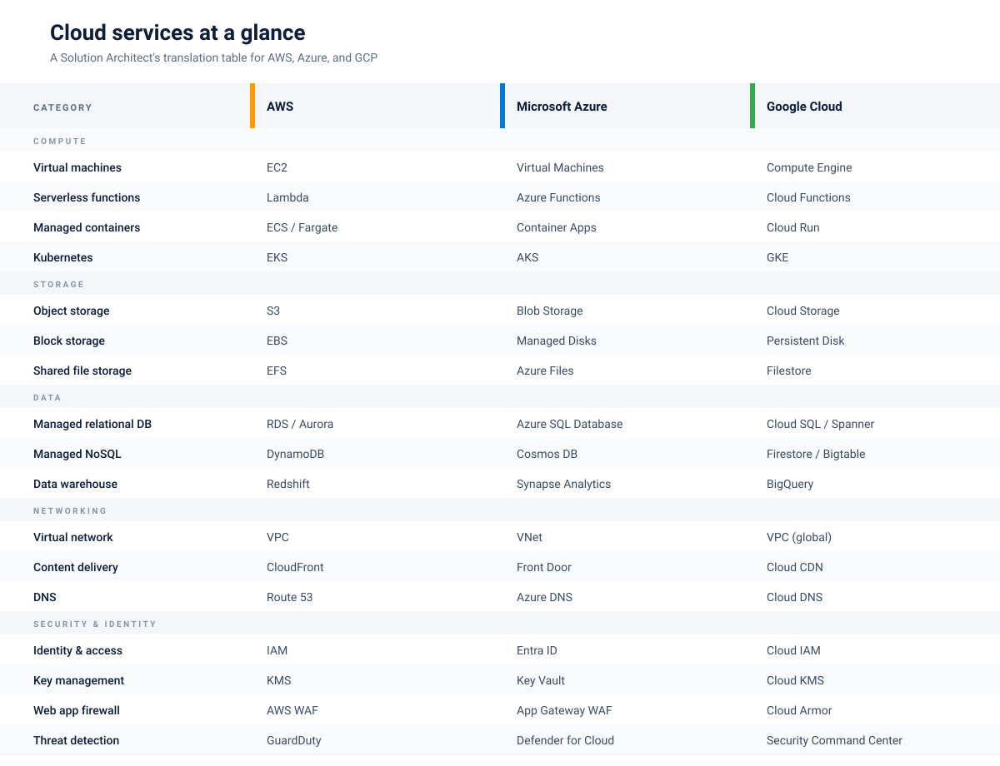

Cloud Fundamentals
Key cloud concepts for Solution Architects. The services, the patterns, and the calls you'll actually be asked to make in a government context.
The UK government's Cloud First policy means cloud hosting is the default for new services, not the exception. As a Solution Architect, you need enough cloud knowledge to make sensible calls on hosting, architecture, cost, and security — without ever needing to open a Terraform file in anger.
The architect's cloud role. You don't need to configure VPCs or write IaC. You need to know what's possible, what's appropriate, where the trade-offs sit, and how to hold a credible conversation with cloud engineers and vendors who will absolutely test you on it.
Procurement: G-Cloud and the CCS framework
Before any of the technical detail matters, the procurement route does. AWS, Azure, and GCP are all available through the Crown Commercial Service's G-Cloud 14 framework, which is how most UK public sector cloud spend reaches the providers. G-Cloud sits alongside the Digital Marketplace and the Technology Services frameworks, and which one you use depends on whether you're buying raw cloud capacity, a managed service on top of it, or a delivery partner to build the thing.
The practical implication for an architect: if a service you're designing around isn't listed on G-Cloud for your chosen provider, your business case has a problem you'll need to solve before anyone signs anything off. Check early.
Cloud services at a glance
Architects compare. If you already know one provider, you can pick up the others fastest by translating service names rather than relearning concepts. The table below is the cheatsheet I wish I'd had on day one.

Amazon Web Services (AWS)
AWS has the largest footprint in UK central government and the deepest catalogue of the three. If you're joining a department that already has a cloud presence, the odds are it's AWS, and the odds are it's running in the London region (eu-west-2).
Compute
- EC2 (Elastic Compute Cloud): Virtual machines, and the answer when nothing else fits. If you reach for EC2 first, stop and ask why the managed option won't work — the operational burden is yours from the moment you launch it.
- Lambda: Serverless functions. Brilliant for event-driven work, APIs with spiky traffic, and glue code between services. Cold starts are real and will catch you out if you have low-latency SLAs; budget for provisioned concurrency or pick a different runtime.
- ECS / Fargate: Managed containers without the full Kubernetes weight. Usually the right answer for containerised workloads in government — you get the portability without paying the EKS operational tax.
- Elastic Beanstalk: The closest AWS has to old-school PaaS. Fine for small teams or quick wins, but you'll outgrow it. Most departments shouldn't start new builds here.
Storage
- S3 (Simple Storage Service): Object storage, and arguably the most consequential service AWS ever shipped. Use it for files, backups, static sites, data lakes, and anything else that doesn't need a filesystem. Storage classes matter — lifecycle rules from Standard to Infrequent Access to Glacier will pay for themselves quickly.
- EBS (Elastic Block Store): Block storage for EC2. Pick gp3 over gp2 as a default; you get better baseline performance for less money.
- EFS (Elastic File System): Shared file storage across instances. Useful but expensive at scale — check whether S3 with a smarter access pattern would do the job first.
Databases
- RDS (Relational Database Service): Managed PostgreSQL, MySQL, SQL Server, and friends. Handles backups, patching, and failover. Multi-AZ is a tick-box that costs roughly double; use it for production and stop arguing about it.
- DynamoDB: Managed NoSQL. Exceptional at scale if your access patterns are well understood. Painful if they aren't — you'll find yourself adding global secondary indexes to work around a design you should have caught earlier.
- Aurora: AWS-native relational database compatible with Postgres or MySQL. Better performance and availability than vanilla RDS, at a price. Worth it for production workloads with real traffic.
Networking
- VPC (Virtual Private Cloud): Your isolated network. Get the CIDR planning right at the start because retrofitting is genuinely awful.
- CloudFront: CDN with edge caching. Worth pairing with WAF for any public-facing service.
- Route 53: DNS, with health-check based routing if you need it.
- API Gateway: Managed API front door for authentication, throttling, and request transformation. Pairs naturally with Lambda.
Security and identity
- IAM (Identity and Access Management): The foundation. Use roles and policies generously, users sparingly, and root accounts almost never.
- KMS (Key Management Service): Encryption keys. Customer-managed keys cost a small amount per month each but give you a clean audit story; worth it for anything classified.
- WAF (Web Application Firewall): Rule-based protection for web apps and APIs. The managed rule groups will catch most automated nuisance traffic with little tuning.
- GuardDuty: Threat detection across your account. Cheap to run, high signal-to-noise. Switch it on by default.
Key decisions for government work
- Region selection: eu-west-2 (London) is the default for UK government data. If you genuinely need in-region disaster recovery, eu-west-1 (Ireland) is the usual fallback — but the data residency conversation needs to happen with your SIRO first, not after.
- Multi-account strategy: Separate dev, staging, and production into different accounts under AWS Organizations. Service Control Policies give you genuine blast-radius isolation; shared VPCs do not.
- Managed by default: Reach for managed services first. They reduce operational burden and ship with better security defaults than anything you'll build yourself.
- Cost management: Tag everything from day one. Reserved Instances or Savings Plans for predictable workloads. AWS Budgets with alerts before the bill arrives, not after.
Anti-patterns to avoid. Putting an RDS instance in a public subnet "just for now". Running production on a single AZ. Using NAT Gateways at scale without understanding the data-processing charges. Leaving S3 buckets with default ACLs in a department that's about to get a security audit. None of these are theoretical — all of them have hit live government services.
Microsoft Azure
Azure has been gaining ground in UK government, often because the department already holds an Enterprise Agreement for Microsoft 365 and the procurement conversation is shorter. It rarely wins on raw technical merit alone, but the integration story with Entra ID, Defender, and Purview is genuinely strong for a Microsoft-heavy estate.
Compute
- Virtual Machines: The EC2 equivalent. Use when you need a specific OS image, custom networking, or a straight lift from on-premise. Azure Hybrid Benefit can drop Windows licensing costs significantly if your department already owns the licences.
- App Service: Managed hosting for web apps. The closest thing Azure has to Elastic Beanstalk, with deeper Visual Studio and GitHub integration.
- Azure Functions: Serverless. The Consumption plan is excellent for spiky workloads, but the maths flips around 50,000 executions a day — move to a Premium plan once traffic is predictable.
- AKS (Azure Kubernetes Service): Managed Kubernetes. Heavier lift than ECS or Fargate, but the right call when you need full Kubernetes APIs and have the team to run them.
- Container Apps: A newer middle option. Containerised workloads without the full Kubernetes overhead. Worth a look for greenfield builds.
Storage
- Blob Storage: Azure's S3. Hot, cool, and archive tiers — use lifecycle policies aggressively or you'll pay hot rates for data nobody is touching.
- Managed Disks: Block storage attached to VMs. Premium SSD for production, Standard for dev and test.
- Azure Files: Managed SMB and NFS shares. Useful for lifting Windows file servers without re-architecting them.
Databases
- Azure SQL Database: Managed SQL Server. The Hyperscale tier handles large workloads well. The serverless tier auto-pauses, which makes it ideal for non-production.
- Cosmos DB: Multi-model NoSQL. Powerful, but the pricing model is opaque — read the RU/s documentation properly before you commit, because surprises here get expensive quickly.
- Azure Database for PostgreSQL / MySQL: Managed open-source databases. Use these when you want the engine without SQL Server licensing in the picture.
Networking
- Virtual Network (VNet): The VPC equivalent. Get peering, NSGs, and route tables right early — retrofitting is painful.
- Application Gateway: Layer 7 load balancer with WAF built in.
- Front Door: Global edge service for content delivery and global routing.
- Private Link: Keeps traffic to PaaS services off the public internet. Worth the effort for anything handling OFFICIAL-SENSITIVE or above.
Security and identity
- Entra ID (formerly Azure AD): Azure's identity backbone. If the department already runs M365, this is your single sign-on story by default.
- Key Vault: Encryption keys plus secrets management in one service.
- Defender for Cloud: Posture management and workload protection. The free tier covers the basics; the paid tier is where the useful detections live.
- Microsoft Sentinel: Cloud-native SIEM. Often the deciding factor when a department wants a single security pane across cloud and M365.
Key decisions for government work
- Region selection: UK South (London) and UK West (Cardiff) for data residency. Both are sovereign regions, but service availability lags in UK West — check before designing around it.
- Subscription strategy: Subscriptions in Azure play the role accounts play in AWS. Separate workloads by subscription, group them under management groups, and apply Azure Policy at the group level.
- Licence portability: Azure Hybrid Benefit takes a serious chunk off Windows VM and SQL Server costs if existing licences are in place. Always worth raising in a business case.
- Where Azure wins: Microsoft-native estates, Power Platform integration, the Defender / Purview / Sentinel bundle, and citizen-facing identity via Entra External ID.
- Where it can bite: Pricing is harder to predict than AWS. Service quality varies across the catalogue — some services feel polished, others feel half-finished.
Anti-patterns to avoid. Running Azure Functions on Consumption plan for predictable workloads (you'll pay for the privilege of cold starts). Skipping Private Endpoints on PaaS services that handle anything sensitive. Treating Cosmos DB like a generic document database without modelling partition keys properly. Building a landing zone without management groups and then trying to add them later.
Google Cloud Platform (GCP)
GCP has the smallest footprint of the three in UK government, but it punches above its weight in specific areas — data analytics, machine learning, and Kubernetes. If a department is building a data platform from scratch and isn't already committed elsewhere, BigQuery alone is often enough to justify the conversation.
Compute
- Compute Engine: Virtual machines. Per-second billing and automatic sustained-use discounts often make it cheaper than the AWS equivalent for steady workloads.
- Cloud Run: Containers as a service, and arguably the cleanest serverless container option across the three providers. Push a container, get an HTTPS endpoint, pay per request.
- Cloud Functions: Serverless functions. Smaller catalogue of triggers than Lambda, but quicker to stand up.
- GKE (Google Kubernetes Engine): Google invented Kubernetes, and GKE is the most polished managed offering. Autopilot mode is worth a look if you don't want to manage node pools yourself.
Storage
- Cloud Storage: Object storage, the S3 equivalent. One API across hot, nearline, coldline, and archive — simpler than the AWS storage class story.
- Persistent Disk: Block storage for VMs. Resizable without downtime, which AWS still can't quite match cleanly.
- Filestore: Managed NFS for shared workloads.
Databases
- Cloud SQL: Managed MySQL, PostgreSQL, and SQL Server.
- BigQuery: GCP's signature service. Serverless data warehouse with storage and compute billed separately. The pricing model rewards careful query design and punishes lazy
SELECT *— a single careless query can cost more than a small EC2 fleet runs in a month. - Spanner: Globally distributed relational database with strong consistency. Expensive, but unique — nothing else in the market does quite what it does.
- Firestore: Managed NoSQL document store. Good fit for mobile and web backends.
Networking
- VPC: GCP VPCs are global by default rather than regional. This is a real architectural difference from AWS, and usually a positive one.
- Cloud Load Balancing: Global load balancing behind a single anycast IP. Simpler than the AWS or Azure equivalents.
- Cloud CDN: Edge caching tied to the load balancer.
- Cloud Armor: WAF and DDoS protection.
Security and identity
- Cloud IAM: Identity and access. The resource hierarchy (organisation, folder, project) gives cleaner inheritance than AWS account boundaries.
- Cloud KMS: Key management.
- Security Command Center: Posture management and threat detection. The Premium tier holds the bits that actually matter.
Key decisions for government work
- Region selection: europe-west2 (London) for UK data residency. There's only one UK region today, so if your design needs in-country disaster recovery, Azure or AWS give you more room to work with.
- Project hierarchy: Projects in GCP are smaller and cheaper to spin up than AWS accounts. Use them generously — one per workload per environment is sensible.
- Where GCP wins: Data platforms (BigQuery, Looker, Dataflow), ML and AI workloads, anything Kubernetes-heavy, and web frontends that benefit from the global load balancer.
- Where it can bite: Smaller G-Cloud footprint and fewer UK-based partners. The marketplace is thinner. If you need a specialist tool, check it's actually available on GCP before you commit.
Anti-patterns to avoid. Using BigQuery for OLTP workloads (it's a warehouse, not a database). Running SELECT * against a BigQuery table without a partition filter and watching your monthly bill double. Treating Firestore like a relational database. Skipping VPC Service Controls when you're handling sensitive data.
Patterns that travel across all three
The provider names change, the underlying patterns don't. These are the ones worth committing to memory:
- Serverless first. Start with managed and serverless. Move to containers or VMs only when you have a specific reason — not "it feels more familiar".
- Event-driven where it fits. Decouple components with events and queues. Better resilience, better scalability, more moving parts to test.
- Infrastructure as Code, always. Terraform, Bicep, or CDK — pick one and stick to it. ClickOps gets you to a demo. It doesn't get you to production.
- Immutable infrastructure. Replace servers rather than patching them. Reduces drift, simplifies rollback, and makes "works on my machine" a much shorter conversation.
- Defence in depth. Network isolation, encryption at rest and in transit, least-privilege access, monitoring and alerting. No single control should be load-bearing.